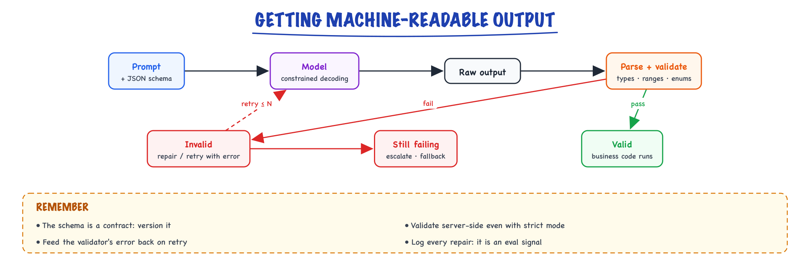
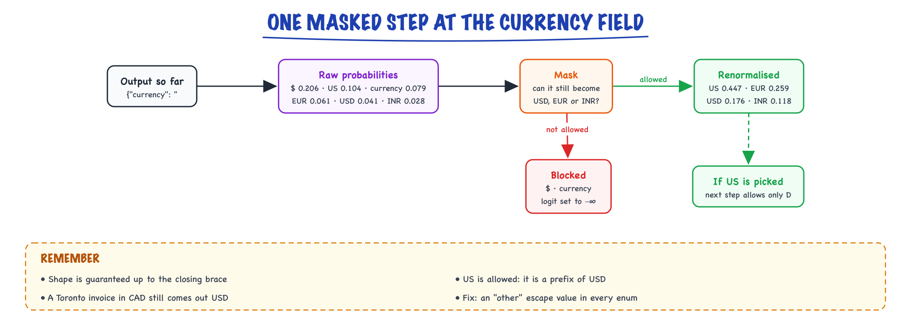

Structured output // Prompting
JSON mode, schemas, constrained decoding, validation and repair.
01 — At a glance

Constrain generation with a schema, validate everything, repair or retry on failure, and escalate when repairs run out.
02 — New words
| Word | Meaning |
|---|---|
| Structured output | Model output in a machine-readable shape (usually JSON matching a schema) that a program consumes directly. |
| JSON Schema | A standard JSON vocabulary for describing a JSON document's shape: types, required keys, enums, nesting. |
| JSON mode | A provider setting that guarantees syntactically valid JSON, but not any particular keys or types. |
| Constrained decoding | At each generation step, allowing only the tokens that keep the output valid under a grammar or schema, by masking all others. |
| Logit mask | Setting disallowed tokens' scores to \(-\infty\) before softmax, so their probability becomes exactly zero. |
| Finite-state machine (FSM) | A set of states and transitions that recognises a pattern one character at a time. A regular expression compiles to one. |
| Context-free grammar (CFG) | A grammar that can describe nesting (objects inside arrays inside objects); recognised with a stack, not just a finite set of states. |
| Strict mode | A provider option that enforces a supplied schema with constrained decoding, usually for a supported subset of JSON Schema. |
| Semantic validation | Checks on meaning that a schema cannot express: line items sum to the total, the date is not in the future. |
| Repair loop | Sending a validation error back to the model and asking for a corrected output, a bounded number of times. |
| Escape value | An allowed value for "unknown" or "none of these" (null, "other"), so the model is never forced to invent. |
| Partial JSON parsing | Parsing an incomplete JSON stream as it arrives, to show or use fields before the object is finished. |
The lesson
03 — The question
Most LLM features inside real systems are not chat. They are functions: text in, data out. A program then routes on the data, stores it, or calls another service with it. For that, "usually returns JSON" is not good enough: at a million calls a day, a 1% failure rate is ten thousand broken records. Structured output is the set of techniques that turn "the model usually gets the format right" into "the format is guaranteed, and the content is checked".
The interview questions:
- What is the difference between asking for JSON, JSON mode, and schema-constrained output?
- How does constrained decoding work? What does it guarantee, and what does it not?
- How do you design a schema the model fills in well?
- The JSON is valid but the values are wrong. Now what?
The running example. Ledgerly lets customers forward supplier invoices by email; an extraction service turns each one into a record for the accounts-payable ledger. One invoice from a design studio reads, in part:
Brightline Studio Invoice BL-0417
Date: 30 May 2025
Design work 12 h x $85.00 $1,020.00
Hosting 1 x $220.00 $220.00
TOTAL $1,240.00
The target record has a vendor, invoice number, ISO date, currency, line items and total. We will follow this invoice through every level of reliability.
04 — Step 1: how free text breaks a parser
Ask a model, in plain instructions, to "return the invoice as JSON" and most replies will parse. The ones that do not fail in a small number of recurring ways:
| Failure | Example | Caught by |
|---|---|---|
| Wrapper text | "Here is the extracted invoice:" before the JSON, or a Markdown code fence around it | Parser |
| Invalid syntax | Trailing comma, single quotes, an unescaped quote inside a description | Parser |
| Truncation | Output hit max_tokens mid-object | Parser, and the finish reason |
| Wrong shape | "date" instead of "issue_date"; total as "$1,240.00" instead of a number | Schema validation |
| Missing or extra fields | No currency key; an invented "tax" key | Schema validation |
| Wrong values | Total 1,204.00 (digits transposed); currency USD for a Canadian-dollar invoice | Only semantic checks |
The table is ordered by how hard each failure is to catch. The rest of the lesson pushes failures down it: syntax and shape become impossible by construction, leaving only wrong values, which need checks of meaning.
05 — Step 2: instructions, parse, retry, and the arithmetic of retries
The baseline is: describe the JSON in the prompt, parse the reply, validate it against a schema in code, and retry on failure. It works with any model and any API.
Retries look cheap. If 3% of replies fail and each retry is an independent draw, two attempts fail together with probability \(0.03^2 = 0.0009\): at a million invoices a day, failures fall from 30,000 to 900. But independence is the key assumption, and it is often false. If the failures come from the input (a scanned invoice the model cannot read, a 40-page statement that pushes the output past max_tokens), the retry fails the same way, and you have paid twice for nothing. Two habits follow: log why each attempt failed, and include the error in the retry prompt so the second attempt is not a blind re-roll (Step 9).
06 — Step 3: JSON mode guarantees syntax, not shape
JSON mode, offered by most providers, guarantees that the reply parses as JSON. That removes the first two rows of the table: no wrapper text, no trailing commas. Truncation can still happen, because the cap on output tokens is outside the grammar, but a check on the finish reason catches it. It does not know your schema. {"invoice": "Brightline, $1,240"} is valid JSON. So is {}.
JSON mode is the right tool when the shape is loose or varies by request, and you validate in code anyway. For a fixed record like Ledgerly's, it is a stepping stone: you still need shape guarantees, which means constraining the generation to the schema itself.
07 — Step 4: constrained decoding, one mask at a time
Recall from Decoding & sampling that each generation step produces a score (logit) for every token in the vocabulary, softmax turns scores into probabilities, and one token is chosen. Constrained decoding inserts one operation before softmax: compute which tokens could continue the output without breaking the schema, and set every other token's logit to \(-\infty\). Their probability becomes exactly zero, and the remaining probabilities are renormalised.
Watch it at the currency field. The output so far is {"currency": " and the schema allows only "USD", "EUR" or "INR" here. The invoice shows dollar signs, so the raw model's favourite next token is $. In the toy decoder from the code section, with a 25-token vocabulary:
$ | US | currency | EUR | USD | INR | |
|---|---|---|---|---|---|---|
| Raw probability | 0.206 | 0.104 | 0.079 | 0.061 | 0.041 | 0.028 |
| Allowed? | no | yes (prefix of USD) | no | yes | yes | yes |
| After mask and renormalising | 0 | 0.447 | 0 | 0.259 | 0.176 | 0.118 |
Three things to see. First, validity is now guaranteed: whatever is sampled, the output stays inside the schema, all the way to the closing brace. Second, US is allowed even though it is not a valid value, because it is a prefix of one; the next step will then allow only D. Tokens and schema values do not line up, so the mask works on "can this still become valid", not "is this valid". Third, the 0.206 the model put on $ did not disappear into a sensible place by design; it was spread over the allowed tokens in proportion to their scores. Here that happens to favour USD. Step 6 shows when that redistribution produces a confidently wrong value.

Constrained decoding at the currency field: the model's favourite token, $, cannot become USD, EUR or INR, so it is masked and its probability is shared among the tokens that still can.
08 — Step 5: from a schema to a mask, fast
The decoder must answer "which of 100,000 tokens keep the output valid?" at every step, without adding noticeable latency. The standard approach, described for regular expressions and JSON Schema by Willard & Louf (2023) and used in open-source libraries such as Outlines, XGrammar and llama.cpp grammars:
- Compile the schema to a grammar. A fixed-shape JSON object with enums, numbers and strings becomes a regular expression, and a regular expression becomes a finite-state machine over characters: state 0 expects
{, a later state is "inside the currency string, having readUS", and so on. - Index the vocabulary against the machine. For each state, precompute which tokens can be consumed character by character without falling off the machine, and which state each leads to. This is done once per schema and cached, so generation-time work is a table lookup per step.
- Prune dead ends. A token can be character-valid yet lead to a state that no token in the vocabulary can continue from. The toy decoder hit exactly this: it allowed
":(valid so far, because":with a space comes next), but its vocabulary had no token for the lone space that was needed, so generation was stuck. A correct index keeps only tokens from which a complete output is still reachable. - Use a stack for recursion. Nesting of a fixed depth is still regular: a list of line items, each an object of fixed shape, is just the object's pattern repeated, so a finite-state machine handles it. Recursive schemas are different. A comment whose
repliesare themselves comments can nest to any depth, and matching each closing bracket to its opener needs memory that grows with depth. That needs a context-free grammar, recognised with a pushdown automaton (a state machine plus a stack). Engines such as XGrammar handle this efficiently, though some providers still limit nesting depth or forbid recursion.
Two practical consequences. The first request with a new schema can be slower, because the grammar is compiled and indexed; later requests reuse it. And schemas with huge enums or very permissive patterns produce large grammars, so keep schemas as simple as the data allows.
09 — Step 6: what constraints do to answer quality
Constrained decoding guarantees the shape. It also takes away the model's ability to say something outside the shape, and that has costs.
Forced choices become confident errors. Suppose the invoice was from a Toronto studio, priced in Canadian dollars, and still shows $. The schema allows USD, EUR or INR. The model's honest output ("CAD", or "unclear") is masked away, and the probability flows to the allowed value most similar to what it wanted: USD. The output is valid, the value is wrong, and nothing signals it. The fix is an escape value: include "other" in every closed enum, and make fields that may be absent nullable. A schema should never require the model to produce something the document does not contain.
Order of fields is order of thought. The model generates fields in schema order and cannot revise earlier ones. If total comes first, the model commits to a total before it has written out the line items that justify it. Put evidence before conclusions: line items before the total, a short reasoning or evidence field before a classification. This is chain of thought (see Prompting techniques) expressed as a schema.
Too tight a format can hurt. Forcing a terse format (a bare number, a single enum) on a task that benefits from reasoning removes the room to reason. If you need both, let the model reason in a field, or in a first call, and extract the structured answer from it.
The mask cannot fix the model's knowledge. If the model misreads 1,240 as 1,204, constrained decoding will faithfully produce "total": 1204.00. That is Step 9's problem.
10 — Step 7: tool calling and strict modes
Function or tool calling is structured output with a different purpose: the model returns arguments that match the tool's parameter schema. Many teams use a forced tool call ("you must call record_invoice") as their structured-output mechanism, especially on APIs where it predates schema-constrained responses. The mechanics are the same; see Tool calling.
Providers' strict or structured-output modes apply constrained decoding to your schema, but usually to a subset of JSON Schema, and the restrictions shape how you write it. Common ones (check the current documentation for your provider):
- Every property must be listed in
required, andadditionalPropertiesmust befalse. Optional fields are expressed as required-but-nullable:"type": ["string", "null"]. - Some keywords are unsupported or ignored: string length limits, some
formatvalues, complexoneOfcombinations. - Limits on nesting depth, number of properties and total enum size.
Libraries such as Pydantic (Python) and Zod (TypeScript) generate the schema from a type definition, so the schema sent to the model and the validator run on the result come from one source. That is the pattern in the code below.
11 — Step 8: designing the schema
Ledgerly's invoice schema, as the provider sees it (abridged):
{
"type": "object",
"properties": {
"vendor": {"type": "string"},
"invoice_number": {"type": ["string", "null"]},
"issue_date": {"type": "string", "format": "date", "description": "ISO 8601, YYYY-MM-DD"},
"currency": {"enum": ["USD", "EUR", "GBP", "INR", "other"]},
"line_items": {"type": "array", "items": {
"type": "object",
"properties": {"description": {"type": "string"},
"quantity": {"type": "number"},
"unit_price": {"type": "string", "description": "decimal, no symbol"},
"amount": {"type": "string", "description": "decimal, no symbol"}},
"required": ["description", "quantity", "unit_price", "amount"],
"additionalProperties": false}},
"total": {"type": "string", "description": "decimal, no symbol or thousands separator"}
},
"required": ["vendor", "invoice_number", "issue_date", "currency", "line_items", "total"],
"additionalProperties": false
}
Each choice has a reason:
| Choice | Why |
|---|---|
| Money as a decimal string, no symbol | Binary floats cannot represent 0.10 exactly, and summing them drifts; a decimal string parsed into a decimal type (or integer cents) is exact. The symbol belongs in currency. |
| Dates as ISO strings with a stated format | "05/06/2025" is ambiguous between countries. One format, stated in the description, removes the ambiguity. |
invoice_number nullable but required | The key is always present (simple code downstream), and null is the honest value when absent. |
"other" in the currency enum | The escape value from Step 6. |
| Line items before total | Evidence before conclusion. |
| Descriptions on ambiguous fields | The model reads them. "No thousands separator" prevents "1,240.00". |
| Flat where possible, meaningful names | issue_date beats d1; names are instructions too. |
12 — Step 9: validate meaning, repair, and give up gracefully
With strict mode, every reply parses and matches the schema. Now the remaining failures are values, and they need checks a schema cannot express. For invoices the checks are natural: each line's quantity times unit price equals its amount; the amounts sum to the total; the date is not in the future; the currency is consistent with any currency code in the text.
Ledgerly's first extraction of the Brightline invoice passes the schema and fails the sum check: the model wrote a total of 1204.00 while the line items, 1020.00 and 220.00, sum to 1240.00. The repair loop sends the specific error back:
"That failed validation: line items sum to 1240.00 but total is 1204.00. Re-read the document and return corrected JSON only."
The second attempt returns 1240.00 and passes. This is self-critique in its useful form: the critique comes from an external check, not from the model reviewing itself (compare Step 7 of Prompting techniques).
Two design rules make the loop safe:
- Bound it. One or two repairs, then route the document to a human review queue with the errors attached. An unbounded loop on an unreadable scan burns money forever.
- Do not let the check be gamed. If the sum check fails, the model may "fix" it by changing a line item to match the wrong total. Where possible, check against something independent (the document's own stated total, extracted separately, or a second extraction), and sample repaired records for human review.
The numbers that tell you the pipeline is healthy: first-pass validity rate, repair success rate, human-queue rate, and, from audited samples, the error rate among records that passed every check. That last one is the only one that measures wrong values that look right; evaluation set design is in Evaluating LLM features.
13 — Step 10: streaming structured output
Streaming JSON is awkward: json.loads fails until the closing brace arrives. When a person is watching (a form filling in, a list of extracted items appearing), use a partial JSON parser that closes open strings and brackets on a copy of the buffer and parses that, and render fields once they are complete. Do not act on a field until its value is closed, and do not run semantic validation until the whole object is in. For back-end extraction like Ledgerly's, nobody watches, so skip streaming.
14 — Choosing a level
| Situation | Use |
|---|---|
| Fixed record consumed by code, provider supports strict schemas | Strict structured output (or forced tool call) plus semantic validation and a bounded repair loop |
| Self-hosted open model | A constrained-decoding library (Outlines, XGrammar, llama.cpp grammars, or the serving engine's built-in guided decoding) plus the same validation |
| Loose or per-request shapes | JSON mode plus validation in code |
| Provider or model with no JSON features | Instructions, prefill { if possible, parse, validate, retry with the error |
| Task needs reasoning before the structured answer | A reasoning field first in the schema, or reason in one call and extract in a second |
| Values must be exactly right (money, IDs) | All of the above plus independent cross-checks and audited sampling |
15 — In code: a constrained decoder, then validation and repair
First, a complete constrained decoder in miniature. The "model" is random scores over a 25-token vocabulary (biased toward $ and unknown at the currency field); the mask guarantees the result is valid JSON of the required shape.
import json from functools import lru_cache import numpy as np # The "grammar": a fixed JSON shape with an enum and a number, as a list of pieces. PIECES = ['{"currency": "', ("USD", "EUR", "INR"), '", "total": ', "NUMBER", "}"] def number_prefix_ok(s, complete): """Is s a (prefix of a) number like 1240 or 1240.5 or 1240.50?""" if s == "": return not complete whole, dot, frac = s.partition(".") if not whole.isdigit() or len(whole) > 7 or (frac and not frac.isdigit()) or len(frac) > 2: return False return not complete or not dot or len(frac) > 0 def viable(text, i=0, complete=False): """Can `text` be extended to (or, if complete, does it equal) a valid output from piece i?""" if i == len(PIECES): return text == "" p = PIECES[i] if isinstance(p, str) and p != "NUMBER": # a literal if len(text) < len(p): return not complete and p.startswith(text) return text.startswith(p) and viable(text[len(p):], i + 1, complete) options = p if isinstance(p, tuple) else None for cut in range(len(text) + 1): # where does this piece end? head, rest = text[:cut], text[cut:] if options: ok_whole = head in options ok_part = cut == len(text) and not complete and any(o.startswith(head) for o in options) else: ok_whole = number_prefix_ok(head, complete=True) ok_part = cut == len(text) and not complete and number_prefix_ok(head, complete=False) if ok_part or (ok_whole and viable(rest, i + 1, complete)): return True return False VOCAB = ['{"', 'currency', '": "', '":', ' "', 'US', 'USD', 'D', 'EUR', 'INR', '$', 'Dollar', 'unknown', '",', ' "total', '": ', '12', '124', '0', '.', '50', '5', '}', '"}', '<eos>'] @lru_cache(maxsize=None) def can_finish(text, depth=12): """Character-level viability is not enough: some token must lead on to a full output.""" if viable(text, complete=True): return True return depth > 0 and any(viable(text + t) and can_finish(text + t, depth - 1) for t in VOCAB if t != "<eos>") def step_mask(text): return np.array([viable(text, complete=True) if t == "<eos>" else viable(text + t) and can_finish(text + t) for t in VOCAB]) def softmax(z): e = np.exp(z - z.max()); return e / e.sum() rng = np.random.default_rng(3) text = "" while True: logits = rng.normal(0, 1, len(VOCAB)) # stand-in for the model's scores at_currency = text == '{"currency": "' if at_currency: # the model "wants" a symbol or "unknown" logits[VOCAB.index("$")] += 3.0 logits[VOCAB.index("unknown")] += 2.0 allowed = step_mask(text) p = softmax(np.where(allowed, logits, -np.inf)) # mask, then renormalise if at_currency: raw = softmax(logits) print("raw top-3:", [(VOCAB[i], round(float(raw[i]), 3)) for i in np.argsort(-raw)[:3]]) print("after mask:", [(t, round(float(q), 3)) for t, q in zip(VOCAB, p) if q > 0]) tok = VOCAB[int(np.argmax(p))] # greedy, so the demo is reproducible if tok == "<eos>": break text += tok print(text) assert json.loads(text) # valid by construction
It prints the raw and masked distributions from Step 4 and an output that always parses: {"currency": "USD", "total": 12}. (The total is nonsense because the "model" is random; the mask guarantees shape, never sense.) Remove can_finish from step_mask and the decoder walks into the ": dead end from Step 5.
Second, the production pattern with Pydantic: one type definition produces both the schema to send and the validator, with a semantic check and a bounded repair loop against a fake model.
import json, re from datetime import date from decimal import Decimal from typing import List, Literal, Optional from pydantic import BaseModel, Field, ValidationError, model_validator class LineItem(BaseModel): description: str quantity: Decimal = Field(gt=0) unit_price: Decimal amount: Decimal class Invoice(BaseModel): vendor: str invoice_number: Optional[str] # required key, value may be null issue_date: date # ISO 8601 string in the JSON currency: Literal["USD", "EUR", "GBP", "INR", "other"] line_items: List[LineItem] total: Decimal @model_validator(mode="after") def amounts_add_up(self): # a semantic check no schema can express for li in self.line_items: if li.quantity * li.unit_price != li.amount: raise ValueError(f"{li.description}: {li.quantity} x {li.unit_price} != {li.amount}") items = sum(li.amount for li in self.line_items) if items != self.total: raise ValueError(f"line items sum to {items} but total is {self.total}") return self schema = Invoice.model_json_schema() # what you send as the response schema print(schema["required"]) def parse(raw): raw = re.sub(r"^```(?:json)?\s*|\s*```\s*$", "", raw.strip()) # tolerate code fences return Invoice.model_validate(json.loads(raw)) # Two replies from a fake model: the first transposes digits in the total. replies = iter([ '```json\n{"vendor": "Brightline Studio", "invoice_number": "BL-0417", "issue_date": "2025-05-30",' ' "currency": "USD", "line_items": [{"description": "Design work", "quantity": 12,' ' "unit_price": "85.00", "amount": "1020.00"}, {"description": "Hosting", "quantity": 1,' ' "unit_price": "220.00", "amount": "220.00"}], "total": "1204.00"}\n```', '{"vendor": "Brightline Studio", "invoice_number": "BL-0417", "issue_date": "2025-05-30",' ' "currency": "USD", "line_items": [{"description": "Design work", "quantity": 12,' ' "unit_price": "85.00", "amount": "1020.00"}, {"description": "Hosting", "quantity": 1,' ' "unit_price": "220.00", "amount": "220.00"}], "total": "1240.00"}']) def extract(document, max_attempts=2): messages = [{"role": "user", "content": f"Extract the invoice.\n<doc>{document}</doc>"}] for attempt in range(1, max_attempts + 1): raw = next(replies) # stands in for the model call try: return parse(raw), attempt except (json.JSONDecodeError, ValidationError) as e: error = str(e).splitlines()[-1] if isinstance(e, json.JSONDecodeError) else e.errors()[0]["msg"] print(f"attempt {attempt} rejected: {error}") messages += [{"role": "assistant", "content": raw}, {"role": "user", "content": f"That failed validation: {error}. " "Re-read the document and return corrected JSON only."}] return None, max_attempts # caller routes to a human queue invoice, attempts = extract("...invoice text...") print(attempts, invoice.total, invoice.currency, len(invoice.line_items))
It prints the required keys, the first attempt's rejection ("line items sum to 1240.00 but total is 1204.00"), and the accepted second attempt with total 1240.00.
More detail
16 — Getting machine-readable output
If a program will consume the model's output, you need reliable structure — not prose you have to parse with regex. This topic is the bridge between "the model writes text" and "the model returns data my code can branch on."
17 — The scenario
You're building a support-ticket triage service. Every inbound ticket must become a row: category (one of hw/sw/billing), urgent (boolean), summary (string). Downstream code routes on category and pages someone on urgent=true. A single malformed output doesn't degrade gracefully — it throws in the parser, lands in a dead-letter queue, and a human fishes it out. At 50,000 tickets/day, a 2% malformation rate is 1,000 manual interventions daily. The difference between the three levels below is exactly that number.
18 — Three levels of reliability
- Ask for JSON in the prompt — works, but the model occasionally adds prose or breaks the schema.
- JSON mode — many APIs force syntactically valid JSON output.
- Schema-constrained / tool-forced output — the strongest: the model must return data matching your schema, validated at the API layer (retries on mismatch).
Same extraction task, all three levels, so you can see exactly what each rung adds.
Level 1 — just ask
import json, anthropic client = anthropic.Anthropic() M = "claude-sonnet-4-20250514" PROMPT = """Triage this support ticket. Respond with ONLY a JSON object, no markdown fences, no commentary: {{"category": "hw" | "sw" | "billing", "urgent": true|false, "summary": "<one sentence>"}} <ticket> {ticket} </ticket>""" resp = client.messages.create(model=M, max_tokens=300, messages=[{"role": "user", "content": PROMPT.format(ticket=ticket_text)}]) text = resp.content[0].text try: data = json.loads(text) # fails ~1-5% of the time in practice: except json.JSONDecodeError: # "Here is the JSON:\n```json..." ... # or a trailing explanation sentence
Two cheap hardening tricks at this level: tell it "no markdown fences, no commentary" explicitly (as above), and output priming — send a partial assistant turn of {" so the model is already inside the object and can't write a preamble. That combination gets many teams to ~99% parseable. But "parseable" is not "valid": {"category": "hardware"} parses fine and still breaks your router, because hardware isn't in your enum.
Level 2 — JSON mode
from openai import OpenAI client = OpenAI() resp = client.chat.completions.create( model="gpt-4o", response_format={"type": "json_object"}, # ← syntax guaranteed messages=[ {"role": "system", "content": "Reply in JSON."}, # required mention {"role": "user", "content": PROMPT.format(ticket=ticket_text)}, ], ) data = json.loads(resp.choices[0].message.content) # will not throw... # ...but data["category"] can still be "hardware", "urgent" can be "yes", # and "summary" can be missing. Syntax ≠ schema.
JSON mode moves the guarantee from "usually JSON" to "always JSON" — the decoder literally cannot emit invalid syntax. What it does not guarantee is your schema: field names, enums, types, required keys are still on the honor system. Structured-outputs variants (response_format with a JSON schema and strict: true) close that gap on OpenAI; on Anthropic, the idiomatic equivalent is level 3.
Level 3 — forced tool with a schema
schema = {"name": "triage", "description": "Return the parsed ticket fields.",
"input_schema": {"type": "object",
"properties": {
"category": {"type": "string", "enum": ["hw", "sw", "billing"]},
"urgent": {"type": "boolean"},
"summary": {"type": "string", "maxLength": 200}},
"required": ["category", "urgent", "summary"]}}
resp = client.messages.create(model=M, max_tokens=300, tools=[schema],
tool_choice={"type": "tool", "name": "triage"}, # ← FORCE this tool
messages=[{"role": "user", "content": ticket_text}])
data = resp.content[0].input # → {"category":"hw","urgent":true,"summary":"..."}
# dict, not a string — no json.loads, no fences, guaranteed shapeThe trick: you're not asking the model to act; you're borrowing the tool-calling machinery (Tool calling) as a schema enforcer. tool_choice: {"type": "tool", "name": "triage"} means the model's only legal move is to emit arguments for that tool, and the API validates them against input_schema. The "tool" is never executed — its arguments are the output. This exact forced-tool trick powers critics, routers, and graders throughout Tools & agents, Multi-agent systems, Fine-tuning & alignment.
| Level | Guarantees | Still your problem | Malformed rate (illustrative) |
|---|---|---|---|
| 1 · Ask in prompt | Nothing (persuasion) | Syntax, schema, semantics | 1–5% |
| 2 · JSON mode | Valid JSON syntax | Schema, semantics | ~0.5–2% schema violations |
| 3 · Forced tool / strict schema | Syntax + schema (types, enums, required) | Semantics only (is the answer right?) | ≈0% shape errors |
19 — Validate anyway: pydantic + retry
Even at level 3, validate in your own code. Reasons: you may switch providers (and level-3 semantics differ), schema constraints like pattern aren't uniformly enforced everywhere, and semantic checks (a summary that just repeats the ticket verbatim, a date in the past) are beyond any JSON schema. The pattern that covers all of it is: parse into a pydantic model, and on failure send the validation errors back to the model for one or two repair rounds.
from pydantic import BaseModel, Field, field_validator, ValidationError from typing import Literal import anthropic client = anthropic.Anthropic() M = "claude-sonnet-4-20250514" class Triage(BaseModel): category: Literal["hw", "sw", "billing"] urgent: bool summary: str = Field(min_length=10, max_length=200) @field_validator("summary") @classmethod def no_placeholder(cls, v: str) -> str: # semantic check: schema can't do this if v.strip().lower() in {"n/a", "none", "summary"}: raise ValueError("summary is a placeholder, write a real one") return v def triage_ticket(ticket: str, max_attempts: int = 3) -> Triage: messages = [{"role": "user", "content": ticket}] for attempt in range(max_attempts): resp = client.messages.create(model=M, max_tokens=300, tools=[schema], tool_choice={"type": "tool", "name": "triage"}, messages=messages) block = resp.content[0] try: return Triage.model_validate(block.input) # the gate except ValidationError as e: # feed the errors back — the model is good at fixing named mistakes messages += [ {"role": "assistant", "content": [block]}, {"role": "user", "content": [{ "type": "tool_result", "tool_use_id": block.id, "is_error": True, "content": f"Validation failed, fix and retry: {e.errors()}"}]}, ] raise RuntimeError(f"unfixable after {max_attempts} attempts") # dead-letter if __name__ == "__main__": t = triage_ticket("My card was charged twice for the pro plan!!") assert t.category == "billing" and isinstance(t.urgent, bool)
Worked reliability math (illustrative): if one attempt yields a valid object 97% of the time and repair fixes 90% of the failures, the loop's overall failure rate is 3% × 10% × (again for attempt 3) ≈ 0.03% — from 1,500 dead-lettered tickets/day down to ~15, for an average cost of 1.03 calls per ticket. Cap attempts and dead-letter the rest; infinite retry loops on a systematically-broken prompt are a great way to spend a weekend's budget overnight.
20 — Streaming structured output
Structured output and streaming coexist awkwardly: a partial JSON object is not valid JSON, so you can't json.loads a stream mid-flight. Your options, in order of preference: (1) don't stream — extraction payloads are small and nobody watches a triage row render; (2) stream for display but parse only the final accumulated string (APIs emit tool-argument deltas as input_json_delta partial-JSON chunks you concatenate); (3) if you truly need incremental fields — e.g. rendering a long report object section by section — use an incremental parser (streaming JSON libraries, or the SDK helpers that surface "best-effort partial objects"). Never act on a partial object: urgent may simply not have streamed yet, and a missing field is indistinguishable from a false one.
Failure modes that survive contact with production
- Markdown fences at level 1: models love
```json … ```. Say "no fences", prime with{", or strip fences defensively before parsing — pick two. - Enum "almost" values:
"Hardware","hw/sw","billing?". Levels 1–2 let these through; only a real enum constraint (level 3) or pydanticLiteralstops them. - The forced tool always fires. With
tool_choiceforcing, the model can't say "this isn't a support ticket" — it will triage your lunch order. Add an explicit escape value (category: "other"or aconfidencefield) or run a cheap gate call first. - max_tokens truncation mid-object yields an unclosed brace even in JSON mode. Check
stop_reason == "max_tokens"and treat it as a retryable error with a bigger budget, not a parse bug. - Deeply nested schemas degrade accuracy. A 5-level nested schema with 40 optional fields produces worse content than three flat calls. Constraint machinery guarantees shape, never correctness.
- Repair loops mask drift. If retries/ticket creeps from 1.03 to 1.4, your prompt or model version changed. Log attempt counts and alert on them (Production & evals evals).
Why this matters later
Structured output is how agents return decisions your code can branch on, and how you get reliable data out of messy text. We reuse this exact "forced tool" trick for critics and routers throughout Tools & agents, Multi-agent systems, Fine-tuning & alignment — a router is just a forced tool whose enum is your list of routes.Takeaway
Climb to the highest enforcement level your API offers (forced tool / strict schema), validate with pydantic anyway, and close the loop by feeding validation errors back for bounded repair. Guarantee shape at the API layer, correctness at yours.Exercises
- Run the same 50 tickets through levels 1, 2 (or level 1 + output priming), and 3. Count syntax failures and schema violations separately for each level. Your numbers will disagree with the illustrative table above — that's the point.
- Add output priming (partial assistant turn
{") to level 1 and measure how much of level 2's benefit you get for free. - Extend the
Triagemodel with a semantic validator that rejects summaries longer than the ticket itself, then craft a ticket that triggers it and verify the repair loop fixes it in one round. - Break the repair loop deliberately: set
max_attempts=1, make the schema require an impossible field (e.g.minLength: 500on summary withmaxLength: 200in the prompt), and confirm the dead-letter path fires instead of looping. - Stream a forced-tool response, log each
input_json_deltachunk, and write a 10-line accumulator that yields the parsed object only once the stream ends. Note the earliest point at which each field became readable.
In production
21 — Where people get lost
- "JSON mode means my schema is enforced." JSON mode guarantees parseable JSON only. Schema enforcement needs strict mode, a forced tool call or a constrained-decoding library.
- "Valid JSON means correct data." Constrained decoding guarantees shape. Values can still be wrong; only semantic checks and audits catch that.
- Enums with no escape value. The model is forced to pick an allowed value even when none fits, producing confident errors.
- Conclusion fields first. The model commits to a total or label before writing the evidence. Order fields as you would want someone to think.
- Money as floats. Use decimal strings or integer minor units.
- Blind retries. Retrying without the error message repeats input-driven failures. Include the error, bound the loop, and route to a human after that.
- Ignoring truncation. Even in strict mode, hitting
max_tokensends the output mid-object. Check the finish reason. - Assuming full JSON Schema support. Strict modes support a subset; design for it, and keep the validator as the source of truth.
22 — How this connects
Builds on
- Decoding & sampling — Greedy, temperature, top-k, top-p and the other knobs, with a live temperature lab.
- Prompting techniques — Zero- and few-shot, chain of thought, decomposition, self-critique, injection defence.
Where this shows up later
- The RAG pipeline — Retrieve, augment, generate: every stage from a question to a grounded, cited answer.
- Agentic RAG & GraphRAG — Retrieval as a tool the agent drives, and knowledge graphs for multi-hop questions.
- Tool calling — Why tools, what goes over the wire, and designing schemas the model uses well.
- Reasoning patterns — ReAct, plan-and-execute, reflection and the other ways agents think.
- Multi-agent systems — When to go multi-agent, topologies, handoffs and state, orchestration, and the production debate.
- Reference architectures — AI system design patterns, a production agent end to end, and architectures by use case.
- Reliability engineering — Surviving flaky models and APIs: retries, fallbacks, timeouts, idempotency.
- Hybrid LLM patterns — LLM extracts and code decides, routing and cascades, LLMs with classic ML, guardrails, text-to-SQL.
23 — Check yourself
Under JSON mode, which rows of Step 1's failure table can still happen?
For a different invoice, the raw probabilities of the allowed tokens at the currency position are US 0.12, EUR 0.03, USD 0.09 and INR 0.01; everything else (0.75 in total) is masked. What are the probabilities after renormalising? What does the 0.75 tell you?
"other" escape value would have caught it.4% of extractions fail validation. Retrying once fixes half of the failures; the other half fail again for the same input-driven reason. At 500,000 documents a day, how many reach the human queue after one retry, and how many would if failures were independent?
A classifier schema is {"label": enum, "reasoning": string}. What would you change, and why?
reasoning before label, so the model writes its evidence before committing; and add an "other" or "unclear" label as an escape value.Why does a token-level constrained decoder need more than "is the text so far a valid prefix?"
": dead end). The index must keep only tokens from which a complete valid output is still reachable.